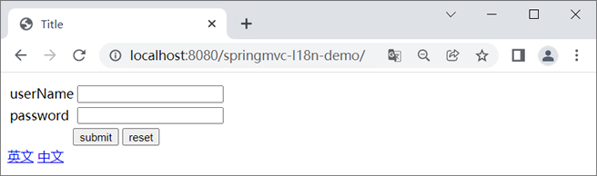
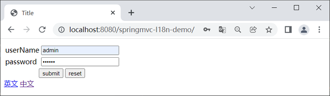
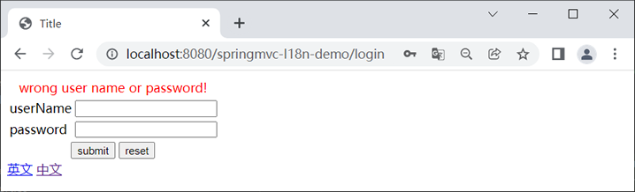
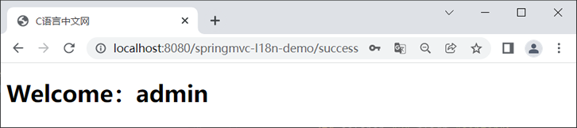
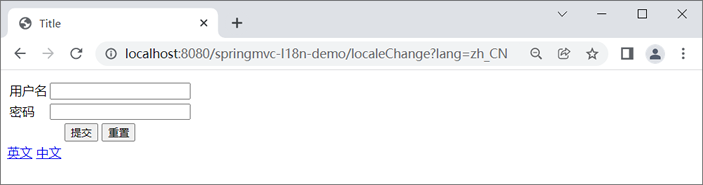
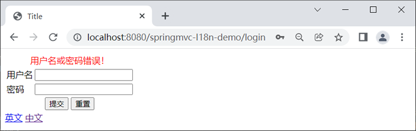
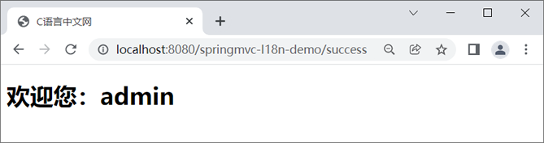

首页 > Spring MVC
Spring MVC国际化
国际化（Internationalization 简称 I18n，其中“I”和“n”分别为首末字符，18 则为中间的字符数）是指软件开发时应该具备支持多种语言和地区的功能。
换句话说，软件应该能够同时应对多个不同国家和地区用户的访问，并根据用户地区和语言习惯，提供相应的、符合用具阅读习惯的页面和数据。例如，为中国用户提供汉语界面显示，为美国用户提供提供英语界面显示。
本节我们以 Thymemeaf 为例，演示下如何在 Spring MVC 项目中实现国际化。
在 Spring 项目中实现国际化，通常需要以下 4 步：
以上个配置说明如下：
在国际化资源文件中，我们需要对不同语言环境下需要进行国际化的各个字段进行配置，示例代码如下。
messages_en_US.properties 代码如下：
messages_zh_CN.properties 代码如下：
需要注意的是，这国际化资源文件名称必须严格按照其命名格式进行命名，否则解析时会出错。其次，国际化资源文件在创建完成后，这些文件通常会自动归档（Resouce Bundle），而该目录并非我们手动创建，如下所示。
1) 在前端页面中添加切换语言环境的超链接，示例代码如下。
2) 在控制器类中添加一个切换或计划语言环境的控制器方法，示例代码如下。
当我们想要手动切换语言环境时，只需要点击相应的超链接即可，此时浏览会发送一个 “/localeChange?lang=***”的请求。该请求会被我们在 Spring MVC 配置文件中配置的 LocaleChangeInterceptor 拦截，并将指定的请求参数（lang）的值转换为 Locale 对象，以获取 LocaleResolver 对象对指定的国际化资源文件进行解析，最终实现切换国际化语言环境的目的。
1. 新建一个名为 springmvc-I18n-demo 的 Web 工程，并将 Spring MVC 相关的依赖引入到工程中，web.xml 配置内容如下。
2. 在 src 目录（类路径）下新建一个名为 springMVC.xml 的 Spring MVC 配置文件，配置内容如下。
3. 在 net.biancheng.c.entity 包下，创建一个名为 User 的实体类，代码如下。
4. 在 net.biancheng.c.controller 包下，创建一个名为 I18nController 的控制器类，代码如下。
5. 在 net.biancheng.c.controller 包下，创建一个名为 LoginController 的控制器类，代码如下。
6. 在类目录下，新建两个国际化资源文件：messages_en_US.properties 和 messages_zh_CN.properties，内容如下。
messages_en_US.properties 配置内容如下：
7. 在 webapp/WEB-INF 下新建一个名为 templates 目录，并在该目录下创建一个名为 login.html 的登录页，代码如下。
8. 在 webapp/WEB-INF/templates 下，创建一个 success.html，代码如下。
9. 将 springmvc-I18n-demo 部署到 Tomcat 服务器中，启动 Tomcat，使用浏览器访问“http://localhost:8080/springmvc-I18n-demo/”，结果如下图。
10. 分别输入错误的 userName 和 password ，如下图。
11. 点击下方的“submit”按钮，结果如下图。
12. 在登录页输入正确的用户名（admin）和密码（admin），点击下方的“submit”按钮跳转到“登陆成功页”，如下图。
13. 返回登录页，点击下方的“中文”将语言环境切换为中文，结果如下图。
14. 再次在登录页输入错误的用户名和密码，结果如下图。
13. 在登录页分别输入用户名（admin）和密码（admin），点击下方的“提交”按钮，结果如下图。
换句话说，软件应该能够同时应对多个不同国家和地区用户的访问，并根据用户地区和语言习惯，提供相应的、符合用具阅读习惯的页面和数据。例如，为中国用户提供汉语界面显示，为美国用户提供提供英语界面显示。
本节我们以 Thymemeaf 为例，演示下如何在 Spring MVC 项目中实现国际化。
在 Spring 项目中实现国际化，通常需要以下 4 步：
- Spring MVC 配置文件进行配置；
- 编写国际化资源（配置）文件；
- 在页面中获取国际化内容；
- 编写控制器方法手动切换语言。
1. 配置 Spring MVC 的配置文件
想要在 Spring MVC 中实现国际化，我们需要在 Spring MVC 的配置文件中配置以下内容：
<bean id="messageSource" class="org.springframework.context.support.ResourceBundleMessageSource">
<property name="basenames" value="messages"></property>
<property name="defaultEncoding" value="UTF-8"></property>
<property name="cacheSeconds" value="0"></property>
</bean>
<bean id="localeResolver" class="org.springframework.web.servlet.i18n.SessionLocaleResolver">
<property name="defaultLocale" value="en_US"/>
</bean>
<mvc:interceptors>
<bean class="org.springframework.web.servlet.i18n.LocaleChangeInterceptor">
<property name="paramName" value="lang"></property>
</bean>
</mvc:interceptors>
以上个配置说明如下：
- ResourceBundleMessageSource：对资源文件中设置的内容进行绑定；
- LocaleChangeInterceptor：用于获取请求中的国际化信息并将其转换为 Locale 对象，以获取 LocaleResolver 对象对国际化资源文件进行解析。
- SessionLocaleResolver：将将包含了国际化信息的 Locale 对象存储在 Session 中，供后续页面继续使用。
2. 编写国际化资源文件
在 Spring MVC 工程的类路径下创建国际化资源文件，文件名格式为：基本名_语言代码_国家或地区代码，例如 messages_en_US.properties、messages_zh_CN.properties。在国际化资源文件中，我们需要对不同语言环境下需要进行国际化的各个字段进行配置，示例代码如下。
messages_en_US.properties 代码如下：
userName=userName password=password
messages_zh_CN.properties 代码如下：
userName=用户名 password=密码
需要注意的是，这国际化资源文件名称必须严格按照其命名格式进行命名，否则解析时会出错。其次，国际化资源文件在创建完成后，这些文件通常会自动归档（Resouce Bundle），而该目录并非我们手动创建，如下所示。
- resources
- Resouce Bundle 'messages'
- messages_en_US.properties
- messages_zh_CN.properties
3. 在页面中获取国际化内容
在完成以上配置后，我们只要在 Thymeleaf 代码中获取指定的字段即可，示例代码如下。
<h2 th:text="#{userName}"></h2>
<h2 th:text="#{password}"></h2>
4. 手动切换语言环境
我们可以在控制器类中编写一个控制器方法，手动切国际化的语言环境。1) 在前端页面中添加切换语言环境的超链接，示例代码如下。
<a th:href="@{/localeChange(lang=en_US)}">英文</a>
<a th:href="@{/localeChange(lang=zh_CN)}">中文</a>
2) 在控制器类中添加一个切换或计划语言环境的控制器方法，示例代码如下。
@Controller
public class TestController {
@Resource
private ResourceBundleMessageSource messageSource;
//切换语言环境
@RequestMapping("/localeChange")
public String localeChange(Locale locale) {
String userName = messageSource.getMessage("userName", null, locale);
String password = messageSource.getMessage("password", null, locale);
System.out.println(userName + "----" + password);
return "user";
}
}
当我们想要手动切换语言环境时，只需要点击相应的超链接即可，此时浏览会发送一个 “/localeChange?lang=***”的请求。该请求会被我们在 Spring MVC 配置文件中配置的 LocaleChangeInterceptor 拦截，并将指定的请求参数（lang）的值转换为 Locale 对象，以获取 LocaleResolver 对象对指定的国际化资源文件进行解析，最终实现切换国际化语言环境的目的。
示例
下面，我们通过一个简单的实例，完整地演示下 Spring MVC+Thymeleaf 实现国际化的过程。1. 新建一个名为 springmvc-I18n-demo 的 Web 工程，并将 Spring MVC 相关的依赖引入到工程中，web.xml 配置内容如下。
<?xml version="1.0" encoding="UTF-8"?>
<web-app xmlns="http://xmlns.jcp.org/xml/ns/javaee"
xmlns:xsi="http://www.w3.org/2001/XMLSchema-instance"
xsi:schemaLocation="http://xmlns.jcp.org/xml/ns/javaee http://xmlns.jcp.org/xml/ns/javaee/web-app_4_0.xsd"
version="4.0">
<!--请求和响应的字符串过滤器-->
<filter>
<filter-name>CharacterEncodingFilter</filter-name>
<filter-class>org.springframework.web.filter.CharacterEncodingFilter</filter-class>
<init-param>
<param-name>encoding</param-name>
<param-value>UTF-8</param-value>
</init-param>
<init-param>
<param-name>forceResponseEncoding</param-name>
<param-value>true</param-value>
</init-param>
</filter>
<filter-mapping>
<filter-name>CharacterEncodingFilter</filter-name>
<url-pattern>/*</url-pattern>
</filter-mapping>
<!--来处理 PUT 和 DELETE 请求的过滤器-->
<filter>
<filter-name>HiddenHttpMethodFilter</filter-name>
<filter-class>org.springframework.web.filter.HiddenHttpMethodFilter</filter-class>
</filter>
<filter-mapping>
<filter-name>HiddenHttpMethodFilter</filter-name>
<url-pattern>/*</url-pattern>
</filter-mapping>
<!-- 配置SpringMVC的前端控制器，对浏览器发送的请求统一进行处理 -->
<servlet>
<servlet-name>dispatcherServlet</servlet-name>
<servlet-class>org.springframework.web.servlet.DispatcherServlet</servlet-class>
<init-param>
<param-name>contextConfigLocation</param-name>
<param-value>classpath:springMVC.xml</param-value>
</init-param>
<load-on-startup>1</load-on-startup>
</servlet>
<servlet-mapping>
<servlet-name>dispatcherServlet</servlet-name>
<url-pattern>/</url-pattern>
</servlet-mapping>
</web-app>
2. 在 src 目录（类路径）下新建一个名为 springMVC.xml 的 Spring MVC 配置文件，配置内容如下。
<?xml version="1.0" encoding="UTF-8"?>
<beans xmlns="http://www.springframework.org/schema/beans"
xmlns:xsi="http://www.w3.org/2001/XMLSchema-instance"
xmlns:context="http://www.springframework.org/schema/context"
xmlns:mvc="http://www.springframework.org/schema/mvc"
xsi:schemaLocation="http://www.springframework.org/schema/beans
http://www.springframework.org/schema/beans/spring-beans.xsd
http://www.springframework.org/schema/context
https://www.springframework.org/schema/context/spring-context.xsd http://www.springframework.org/schema/mvc https://www.springframework.org/schema/mvc/spring-mvc.xsd">
<!--开启组件扫描-->
<context:component-scan base-package="net.biancheng.c"></context:component-scan>
<!-- 配置 Thymeleaf 视图解析器 -->
<bean id="viewResolver"
class="org.thymeleaf.spring5.view.ThymeleafViewResolver">
<property name="order" value="1"/>
<property name="characterEncoding" value="UTF-8"/>
<property name="templateEngine">
<bean class="org.thymeleaf.spring5.SpringTemplateEngine">
<property name="templateResolver">
<bean class="org.thymeleaf.spring5.templateresolver.SpringResourceTemplateResolver">
<!-- 视图前缀 -->
<property name="prefix" value="/WEB-INF/templates/"/>
<!-- 视图后缀 -->
<property name="suffix" value=".html"/>
<property name="templateMode" value="HTML5"/>
<property name="characterEncoding" value="UTF-8"/>
</bean>
</property>
</bean>
</property>
</bean>
<mvc:annotation-driven/>
<mvc:view-controller path="/" view-name="login"></mvc:view-controller>
<mvc:view-controller path="/success" view-name="success"></mvc:view-controller>
<bean id="messageSource" class="org.springframework.context.support.ResourceBundleMessageSource">
<property name="basenames" value="messages"></property>
<property name="defaultEncoding" value="UTF-8"></property>
<property name="cacheSeconds" value="0"></property>
</bean>
<bean id="localeResolver" class="org.springframework.web.servlet.i18n.SessionLocaleResolver">
<property name="defaultLocale" value="en_US"/>
</bean>
<mvc:interceptors>
<bean class="org.springframework.web.servlet.i18n.LocaleChangeInterceptor">
<property name="paramName" value="lang"></property>
</bean>
</mvc:interceptors>
</beans>
3. 在 net.biancheng.c.entity 包下，创建一个名为 User 的实体类，代码如下。
package net.biancheng.c.entity;
public class User {
private String userName;
private String password;
public String getUserName() {
return userName;
}
public void setUserName(String userName) {
this.userName = userName;
}
public String getPassword() {
return password;
}
public void setPassword(String password) {
this.password = password;
}
@Override
public String toString() {
return "User{" +
"userName='" + userName + '\'' +
", password='" + password + '\'' +
'}';
}
}
4. 在 net.biancheng.c.controller 包下，创建一个名为 I18nController 的控制器类，代码如下。
package net.biancheng.c.controller;
import org.springframework.context.support.ResourceBundleMessageSource;
import org.springframework.stereotype.Controller;
import org.springframework.web.bind.annotation.RequestMapping;
import javax.annotation.Resource;
import java.util.Locale;
@Controller
public class I18nController {
@Resource
private ResourceBundleMessageSource messageSource;
//切换语言环境
@RequestMapping("/localeChange")
public String localeChange(Locale locale) {
String userName = messageSource.getMessage("userName", null, locale);
String password = messageSource.getMessage("password", null, locale);
String submit = messageSource.getMessage("submit", null, locale);
String reset = messageSource.getMessage("reset", null, locale);
String error = messageSource.getMessage("error", null, locale);
System.out.println(userName + "----" + password + "----" + submit + "----" + reset + "----" + error);
return "/login";
}
}
5. 在 net.biancheng.c.controller 包下，创建一个名为 LoginController 的控制器类，代码如下。
package net.biancheng.c.controller;
import net.biancheng.c.entity.User;
import org.springframework.stereotype.Controller;
import org.springframework.web.bind.annotation.RequestMapping;
import org.springframework.web.bind.annotation.RequestMethod;
import javax.servlet.http.HttpServletRequest;
import javax.servlet.http.HttpSession;
@Controller
public class LoginController {
@RequestMapping(value = "/login", method = RequestMethod.POST)
public String login(User user, HttpServletRequest request) {
if ("admin".equals(user.getUserName()) && "admin".equals(user.getPassword())) {
HttpSession session = request.getSession();
session.setAttribute("loginUser", user);
return "redirect:/success";
}
request.setAttribute("msg", "error");
return "login";
}
}
6. 在类目录下，新建两个国际化资源文件：messages_en_US.properties 和 messages_zh_CN.properties，内容如下。
messages_en_US.properties 配置内容如下：
userName=userName password=password submit=submit reset=reset error=wrong user name or password! welcome=Welcomemessages_zh_CN.properties 配置内容如下：
userName=用户名 password=密码 submit=提交 reset=重置 error=用户名或密码错误！ welcome=欢迎您
7. 在 webapp/WEB-INF 下新建一个名为 templates 目录，并在该目录下创建一个名为 login.html 的登录页，代码如下。
<!DOCTYPE html>
<html lang="en" xmlns:th="http://www.thymeleaf.org">
<head>
<meta charset="UTF-8">
<title>Title</title>
</head>
<body>
<form th:action="@{/login}" method="post">
<table>
<tr>
<td colspan="2" align="center">
<p style="color: red;margin: auto" th:text="#{error}" th:if="${not #strings.isEmpty(msg)}"></p>
</td>
</tr>
<tr>
<td th:text="#{userName}"></td>
<td><input type="text" name="userName" required><br></td>
</tr>
<tr>
<td th:text="#{password}"></td>
<td><input type="password" name="password" required><br></td>
</tr>
<tr>
<td colspan="2" align="center">
<input type="submit" th:value="#{submit}">
<input type="reset" th:value="#{reset}">
</td>
</tr>
</table>
</form>
<a th:href="@{/localeChange(lang=en_US)}">英文</a>
<a th:href="@{/localeChange(lang=zh_CN)}">中文</a>
</body>
</html>
8. 在 webapp/WEB-INF/templates 下，创建一个 success.html，代码如下。
<!DOCTYPE html>
<html lang="en" xmlns:th="http://www.thymeleaf.org">
<head>
<meta charset="UTF-8">
<title>C语言中文网</title>
</head>
<body>
<h1 th:text="#{welcome}+'：'+${session.loginUser.getUserName()}"></h1>
</table>
</body>
</html>
9. 将 springmvc-I18n-demo 部署到 Tomcat 服务器中，启动 Tomcat，使用浏览器访问“http://localhost:8080/springmvc-I18n-demo/”，结果如下图。

图1：登录页-英文
图1：登录页-英文
10. 分别输入错误的 userName 和 password ，如下图。

图2：账号密码-英文
图2：账号密码-英文
11. 点击下方的“submit”按钮，结果如下图。

图3：错误提示-英文
图3：错误提示-英文
12. 在登录页输入正确的用户名（admin）和密码（admin），点击下方的“submit”按钮跳转到“登陆成功页”，如下图。

图4：登陆成功页-英文
图4：登陆成功页-英文
13. 返回登录页，点击下方的“中文”将语言环境切换为中文，结果如下图。

图5：登录页-中文
图5：登录页-中文
14. 再次在登录页输入错误的用户名和密码，结果如下图。

图6：错误提示-中文
图6：错误提示-中文
13. 在登录页分别输入用户名（admin）和密码（admin），点击下方的“提交”按钮，结果如下图。

图6：登陆成功-中文
图6：登陆成功-中文
关注公众号「站长严长生」，在手机上阅读所有教程，随时随地都能学习。内含一款搜索神器，免费下载全网书籍和视频。

微信扫码关注公众号